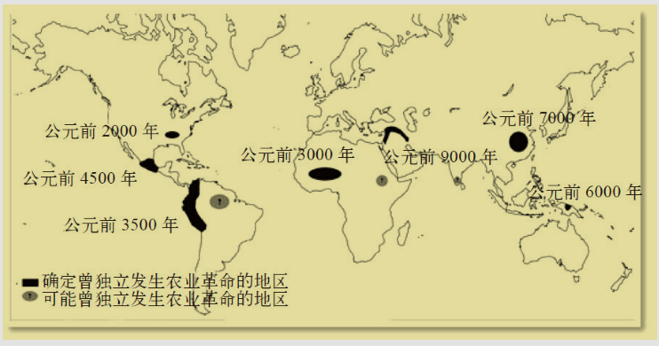
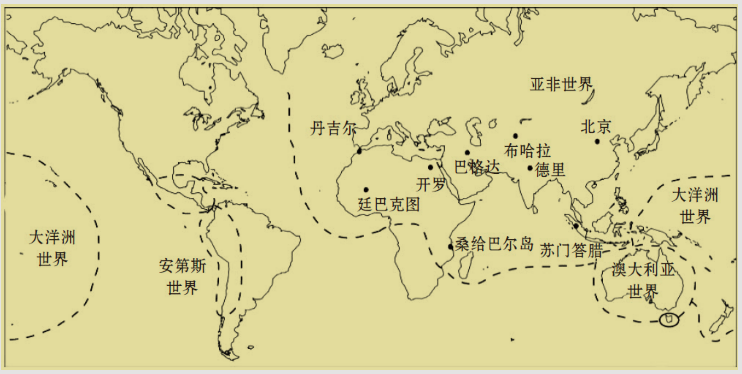
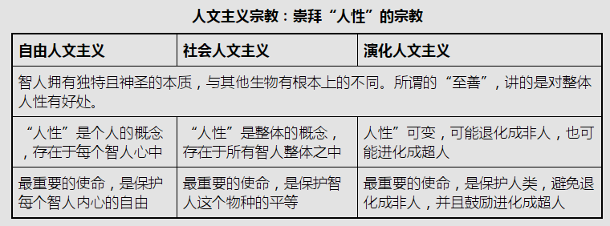

第一次听到”人类是地球之癌”这种说法已经是两三年前了，有一次饭后遛弯在讲到雾霾问题的时候某个同事提到的。
简单的想了想，人类和癌细胞的确存在着几个相似特性：
人类人口数量的爆发式增长与癌细胞疯狂增生，拼命生长类似；
人类对资源和能源的消耗速度与癌细胞对营养物质的攫取和吸收类似；
人类对其它物种的杀戮和排挤与癌细胞对肌肤其它组织的压迫和排挤类似；
所以从这些层面上看，如果把地球看成一个有机体，那么人类就是地球的癌症。而且癌症发展的最终结果是它赖以生存的宿主被折磨致死，癌细胞本身也随着宿主一起消亡。
我们暂且不给这个比方是否正确下结论，而是带着疑问和思考阅读《人类简史》这部在我看来更像哲学书的历史书。
《人类简史》这本书的作者是一个以色列年轻人，名叫尤瓦尔·赫拉利。书本一开始，就通过简单又不失要点的文字道出了接下来文章的重点和思路。
135亿年前的宇宙大爆炸，物质，能量，时间，空间的这些基本特征形成了“物理学”；
在大爆炸之后的30万年物质和能量形成复杂的结构原子，进一步构成分子，这些原子、分子的互动形成了“化学”；
38亿年前在我们称之为地球的行星上，有一些分子结合起来，形成了更复杂而又精细的结构，称为有机体，这些有机体的故事形成了“生物学”；
大约7万年前一些属于智人这一物种的生物开始创造更复杂的系统，称为文化，这些人类的文化不断的发展形成了“历史学”。
在历史的道路上有三大重要的革命，7万年前的“认识革命”让历史正式启动；12000年前的“农业革命”让历史加速发展；而仅仅500年前的“科学革命”可以说给历史画上了分号另创新局。《人类简史》这本书的内容，讲述的就是这三大革命如何影响和改变人类和其它的生物的。
生物学家把所有的生物划分成不同的”物种”，而所谓属于同一物种，就是指它们会彼此交配，并且能产生下一代。这里有个有意思的例子就是马和驴会交配，看上去也能产生下一代，但是它们的下一代是骡，骡并不具备生育能力，所以马和驴并不是同一物种，它们有各自的演化路径。
从同一个祖先演化而来的不同的物种，会属于同一个”属”。比如狮子，老虎，豹，虽然属于不同的特种，但是都是”豹属”。许多不同的属还能归为相同的科，例如猫科(狮子，猎豹，家猫)，犬科(狼，狐狸，狗)，象科(大象，长毛象，乳齿象)。这样一层层向上归类还有”目”，”纲”，”门”，”界”，这里就只些最常见的例子，家里的狗狗属于动物界，脊索动物门，哺乳纲，食肉目，犬科，犬属，狼种，而我们人类属于动物界，脊索动物门，哺乳纲，灵长目，人科，人属，智人种。
人类早已习惯自己是唯一的人，这是因为过去1万年间，人种只剩下智人一种，而在过去可不是这样子的。最早的人类是从大约250万年前的东非开始演化的，祖先是一种更早的猿属”南方古猿”，大约200万年前，这些远古人类有一些离开了家园踏上了旅程，足迹遍及北非、欧洲和亚洲的广大地带。
这些远古人类中有欧洲和西亚的尼安德特人，印尼爪哇岛的梭罗人，西伯利亚的丹尼索瓦人，另外还有鲁道夫人，匠人，以及我们自己这种颇为厚颜的把自己命名为”智人”的人种。
也就是说从200万年前到大约1万年前为止，整个世界其实存在着多种不同的人种。而人类相比其它动物所拥有的巨大优势是有比较大的大脑，能直立行走，会使用工具，有超凡的学习能力和复杂的社会结构，再加上对火的使用，使人类在踏上食物链顶端的道路上迈出了一大步。
大约7万年前，智人开始从东非扩张到阿拉伯半岛，并且很快席卷整个欧亚大陆。每当他们抵达一个新的地点，当地的原生人类族群很快就会灭绝。现存历史离我们最近的梭罗人遗迹大约是5万年前，丹尼索瓦人在那之后不久也绝迹了，尼安德特人大约在3万年前退出了历史舞台，而到了12000年前，像小矮人一样的人为也从弗洛里斯岛上消失。
之所以会发生这种现象目前主流的说法有两种，一种是混种繁衍理论，还有一种是替代理论，科学界这些不同的观点之前的辩论仍然在继续。而关于智人胜出的秘诀究竟为何？目前最有可能的解答，也正是让人们得以辩论的原因是：智人之所以能征服世界，是因为有独特的语言。
智人的语言并不是世界上第一种语言，也并不是世界上唯一的语言，很多动物都有着自己的某种语言。而智人语言真正独特的部分并不在于能够传达客观存在于世界上的事物的信息，而是能传达一些根本不存在的事物的信息。而正是这样的能力，引发了第一大重要的革命”认知革命”。
在认知革命之后，传说、神话、神以及宗教应运而生。不论是人类还是其它动物都能大喊：小心，有狮子！但在认知革命后，智人就能说出：狮子是我们部落的守护神。这种对虚构事物的讨论的结果是，使得大批不相识的人，只要相信某个故事，就能共同合作。
除了存在于人类的共同想象之外，这个宇宙根本就没有神，没有国家，没有钱，没有人权，没有法律也没有正义。天主教会至今已经存在上千年，它靠的不是在教徒之间传递基因，而靠的是把《圣经·新约》和教律年营造的故事代代相传。
在认知革命之后，智人得到了新的技术、组织能力和眼界，能够走出欧亚非大陆，前往处面的世界。他们的第一项重大成就就是在大约45000年前殖民了澳大利亚。这是人类第一次离开欧亚非生态系统，也是第一次有大型陆生哺乳动物能够从欧亚非大陆抵达澳大利亚。更重要的是，这些人类先驱究竟对这片新世界做了什么。从这些狩猎采集者登上澳大利亚海滩的那一刻，就已经在这片大陆登上了食物链的顶端，也从此开始成为地球史上最致命的物种。
澳大利亚当时有24种体重在50公斤以上的动物中，有23种都惨遭死绝，许多比较小的动物也从此消失，整个澳大利亚生态系统的食物链重新洗牌，这也是澳大利亚生态系统数百万年来最重大的一次转型。有些学者试着为人类脱罪，把这些物种死绝的原因推给气候变迁。但要说智人是无辜的实在让人难以置信。有三大证据显示气候很难成为借口，而人类难辞其咎。
澳大利亚的气候在45000前那一阵变化的规模和幅度相比过去的数百万年并不算大。过去百万年间平均每十万年就有一次冰河期，上一次大约在75000年前到15000年前，而且并不是特别严重。而澳大利亚巨型的双门齿兽在150万年前就已经出现，活过了至少10次冰河期，为什么会在45000年前突然灭绝？如果说双门齿兽是唯一在这个时期灭绝的大型动物那还可能有偶然的原因，但是为什么全澳大利亚超过90%的大型动物都差不多在这一时期从历史上消失？如果说智人正好在这些大型动物都死于严寒的时候来到了澳大利亚，实在让人难以信服。
如果是气候变迁导致的物种大灭绝，海洋生物受到的冲击通常不会亚于陆地生物。然而，我们并没有发现在45000年前海洋生物有显著的灭绝情形。
类似澳大利亚这种生物大灭绝的情形，在接下来的几千年还在不断上演，而时间点都是智人又再次移居到这些外面的世界的时候。
对于手头上只有石器时代技术的人类是如何搞出这场生态浩劫的，有三种解释相映成趣：
大型动物的繁殖速度缓慢，怀孕时间长，每胎数量少，怀孕间隔时间长。所以人类就算每隔几个月才猎杀一头双门齿兽，也会让其出死亡数高于出生数，于是不到几千年就会看到最后一头又门齿兽孤单的死去。
认为智人抵达澳大利亚时已经掌握到火耕的技术，会刻意烧毁难以跨越的灌木丛和森林，短短几千年就能彻底改变澳大利亚大部分的生态环境。
就是同意狩猎和火耕影响的同时，也没有忽视气候的因素。
智人的第一次殖民正是整个动物界最大也是最快速的一场生态浩劫。其中受创最深的是那些大型、毛茸茸的动物。在认知革命发生的时候，地球上大约有200属体重超过50公斤的大型陆生哺乳动物，而等到农业革命的时候只剩下大约100属。也就是说，人类在没有发明轮子、文字和铁器前，智人就已经让地球上一半的大型兽类魂归西天、就此灭绝。
从采集走向农业的转变，始于大约公元前9500年~公元前8500年。学者曾经以为农业起源于中东，然后再传布到世界各地。而现在则认为农业是同时间在各地独自发展而开花结果，而不是由中东的农民带到世界各地的。中美洲人驯化了玉米和豆类，而不知道中东人种了小麦和豌豆；南美人学会了如何栽培马铃薯和驯养骆马，但也不知道墨西哥或地中海发生了什么；中国最早驯化的是稻米、小米和猪；北美最早的农夫也是懒得在树丛里寻找南瓜而决定自己种；新几内亚驯化了甘蔗和香蕉；西非人民也驯化了小米、非洲稻和小麦。就从这些最早的出发点，农业开始往四方传播，从而引发的是第二项重要的革命”农业革命”。到了公元1世纪，全球大多数地区的绝大多数人口都从事农业活动。

学者们曾经宣称农业革命是人类的一大跃进，是由人类脑力所推动的进步故事。他们说演化让人类越来越聪明，从而解开了大自然的秘密，才能够驯化绵羊，种植小麦。之后，人类就可以开开心心的放弃狩猎采集的艰苦、危险、简陋的生活，安定下来享受农民愉快而饱足的生活。
然而这个故事只是幻想，并没有证据显示人类越来越聪明，在农业革命之前，采集者就已经对大自然的秘密了然于胸，毕竟为了生存，他们不得不了解自己所猎杀的动物，所采集的植物。农业革命带来的非但不是轻松生活的新时代，反而农民比采集者过得更辛苦、更不满足的生活。
狩猎采集者的生活其实更为丰富和多变，也比较少会碰到饥饿和疾病。确实，农业革命让食物问题增加，但量的增加并不代表吃的更好、过得更悠闲，反而造成了人口爆炸，而且产生了一群养尊处优、娇生惯养的精英分子。普遍来说，农民的工作比采集者更辛苦，而到头来饮食更糟糕，农业革命可以说是史上最大的骗局。
我们可以简单的用DNA拷贝数量的多寡来评判一个特种的演化的成功与否，就像我们今天说某家公司行不行总是看其市值，而不会关心其员工是否过得开心。而这正是农业革命的本质：让更多的人却以更糟糕的状态生活下去。我们从农业革命中学到的重要一课就是，物种演化上的成功并不代表个体的幸福。
因此农业革命可能是史上最具争议的事件，有些人认为这让人类迈向了繁荣和进步，而有些人则认为这条路终将导致灭亡。在公元前10000年，在进入农业时代前夕，地球上的采集人口大约有500万到800万，而到了公元1世纪的时候，这个人口只剩下一两百万(主要在澳大利亚、美洲和非洲)，而相对应的农业人口已经达到了2.5亿。
农业带来的影响深远，是后来大规模政治和社会制度的基础。虽然农民们勤劳不懈，希望能保障自己未来的经济安全，但这几乎从来未曾实现。不管在哪里都出现了统治者和精英阶级，不仅靠着农民辛苦种出的粮食维生，还几乎全部征收抢光，留给农民只够勉强过活的数量。
正是这些征收来的多余的粮食，养活了政治、战争、艺术和哲学，建起了宫殿、堡垒、纪念碑和庙宇，农民生产出来的粮食养活了一小撮精英分子：国王、官员、牧师、战士、艺术家和思想家，而历史写的几乎全是这一小撮人的故事，历史只告诉我们极少数人在做什么，而其它绝大多数人的生活就是不停的挑水耕田。
农业革命后几千年的历史，可以总结为一个问题：如果人类基因里没有大规模合作的生物本能，所有的合作网络是如何维系的？简单的讲法是人类创造出了由想象建构的秩序、发明了文字，以这两者补足我们基因的不足。
农业革命之后，人类社会的规模变得更大、更复杂，而维系社会秩序的虚构故事也更为的细致和完整。人类几乎从出生到死亡都被种种虚拟的概念和故事围绕，让人们以特定的方式思考，以特定的标准行事，想要特定的东西，也遵守特定的规范。让数以百万计的陌生人能遵照着这种人造的而非天生的直觉合作无间，而这种直觉就是文化。
人类文化一直流动变化不休，但是这种流动究竟是随机的还是有其整体的模式？换句话说，历史有个大方向吗？答案是肯定的。
想看清历史的大方向，就是数数看不同时期地球上有多少种不同的文化。我们现在常认为整个地球是一个单位，但在历史上的大多数时间，地球其实像个星系，各个人类文明各自构成不同的世界。大约在公元前10000年的时候，地球上有数千个人类文明， 但到公元前2000年的时候，这个数量只剩下数百，到了公元1450年，这个数字更是急遽下降，当时即将进入欧洲探险时代，地球上将近9成的人类已经紧密连接，活在亚非世界里，当时绝大多数的欧亚非已经有了紧密的文化、政治和经济连接。

而今天，几乎所有的人类都接受同一套地缘政治体系(整个地球划分为国际公认的不同国家)，使用同样的经济制度(市场经济)，采用同样的法律制度(人权和国际法基本上放诸四海皆准)，也接受同样的科学体系(不管是哪里的专家对原子结构和肺结核疗法的意见都会相同)。这种全球化虽然单一，但并非同质。单一的全球文化也包含着不同类型的人和生活方式，他们都彼此都是密切相关的，并且会以多种不同方式互相影响。
所以我们通常说历史的大方向是：合久必分只是一时的，而分久必合才是不变的大趋势。而有三种重要的力量促使着全人类的统一金钱、帝国和宗教。
金钱不容否认的是有史以来最普遍也是最有效的互信系统。这种信任的背后有着复杂而长期的政治、社会和经济网络。为什么我们会相信贝壳、金币或美元？原因就在于：我们的邻居也相信。正因为我们的邻居相信，我也相信。而我们都信的原因是国王也信，要求我们用这些东西来缴税。所以金钱制度有两大原则：万物可换，万众相信。
帝国作为一种政治秩序有两项重要特征。一是帝国必须统治着许多不同的民族，二是帝国的疆域可以灵活的调整甚至无限的扩张。也就是说帝国的定义只在于文化的多元性和疆域的灵活性，至于起源，政府形式，领土范围和人口规模都不是重点，并不是一定要有军事征服才有帝国。自公元前200年左右，大多数人都活在各自的帝国中，而未来所有人都可能活在单一帝国之下，而且这会是个真正的全球帝国，如果全世界的人都拥有同样的人权，那么由某个单一的政府来保护这种人权岂不是更简单？虽然目前世界政治基本上还是各行其政，但国家的独立性正在迅速的消失，没有国家能行使真正独立的经济政策，或是任意的发动战争，甚至有时候连国家内政也无法完全独立决定。各国都需要遵守全球在财政，环保和法律上的标准，这种标准形塑着我们的世界，单个国家本身的疆域和意见已经逐渐失势。
宗教是一种人类规范及价值观系统，建立在超人类的秩序之上。宗教认为世界有一种超人类的秩序，而并非出于人的想象或是协议，比如职业足球就不是宗教，因为虽然其有一定的规则、秩序和惯例，但是足球的发明是人类自己，规则的制定也是人类自己，并且这种规则可以随时改变；以这种超人类的秩序为基础，宗教会发展出具有约束力的规范和价值观，比如很多人都相信有鬼魂、精灵、轮回等，但这并不构成宗教，因为相信这些东西没有形成道德和行为的标准。某个宗教如果想要将幅员辽阔、族群各异的人都收归旗下，必须具备”普世”和”推广”两个特质。多数古代中宗教都是”区域”和”排他”的，直到公元前1000年左右，才出现了具备普世和推广特质的宗教，这其实也可以说是历史上重要的革命之一，其对人类统一的贡献绝不亚于金钱和帝国。

有神论的宗教，重点在神的崇拜，而人文主义宗教的重点就是对人的崇拜，或者更明确的讲是对智人的崇拜。认为智人是独特的，神圣的，从本质上与其它现代动物不同。根据对人性定义的不同，人文主义又可以分为自由人文主义(认为人性就在于每个人的自我特性，因而各人自由神圣不可侵犯)，社会人文主义(追求所有人都能平等)和演化人文主义(保护人类，避免退化成非人类，放鼓励进化成超人类)。

历史就这样在金钱、帝国、宗教的影响下从一个岔路走到另一个岔路，大约在公元1500年，历史作出了重大的选择，改变的不只是人类的命运，而是地球上所有生命的命运。我们将它称为”科学革命”。
假如有个西班牙农民在公元1000年的时候沉睡去，等到他醒来的时候已经过去了500年，虽然这个时候哥伦布的水手已经登上了美洲大陆，但他看看四周的世界还是会感到十分的熟悉，虽然这时的国界，科技和礼仪都有了很大的不同，但是这位做了500年大梦的中世纪农民仍然可以找到回家的感觉。然后如果某个哥伦布的水手做了500年的梦，醒来的时候听到的是21世纪iphone的铃声，他会发现自己处在一个完全陌生、无法理解的世界，他可能会问自己，这是天堂么？还是地狱？
在过去的500年间，人类的力量有了前所未有的惊人的成长。公元1500年的时候，全球的智人数量大概是5亿，而现如今已经超过了70亿。公元1500年的人类的GDP总额大概为2500亿美元，而现如今是60万亿。公元1500年全人类每天总共消耗13万亿卡路里，但是今天每天要消耗1500万亿卡路里。人口增长了14倍，生产增加了240倍，而能量的消耗增长了115倍。而如果要在过去500年间挑出一个最重大，最具代表性的时刻，一定就是1945年7月16日上午5点29分45秒。在这一秒，美国科学家在新墨西哥的阿拉莫戈多引爆了第一颗原子弹。从这时开始，人类不仅有了改变历史进程的能力，更有了结束历史进程的能力。
科学革命并不是”知识的革命”，而是”无知的革命”，真正让科学革命起步的重大发现，就是发现”人类对重要的问题其实毫无所知”。现代科学与先前的知识体系有三大不同之处：愿意承认自己无知；以观察和数学为中心；取得新的能力。现代科学没有需要遵守的教条，研究方向都有一个共同的核心：收集各种实证观察，并以数学工具整理。
我们活在一个科技时代，许多人相信有了科技就能找到所有问题的最终解答。只要让科学家和科技研发人员继续努力，总有一天我们能在地球上创造天堂。然而，科学活动并不是处于某个更高的道德和精神层面，而是也像其它文化活动一样，受到经济、政治和宗教利益的影响。科学研究之所以能够得到经费，多半是因为有人认为这些研究有助于达到某种经济、政治或宗教目的。而从1850年起，欧洲之所以能称霸世界，很大程度靠的就是军事、工业和科学领域的合作，在现代早期培养了现代科学和资本主义，从而使得现代晚期可以称霸。
所谓资本主义，就是认为”资本”和”财富”有所不同。资本指的是投入生产的各种金钱、物品和资源，而财富指的是那些埋在地下，或浪费在其它非生产性活动的金钱、物品和资源。并且资本主义认为，生产的利润必须再投资于提高产量。现代经济之所以能成长，是因为我们愿意相信未来，资本家也愿意将利润再投入生产，然而光是这样是不够的，经济的成长不需要能源和原料，但是能源和原料是有限的，一旦用光了我们的整个经济系统是否为崩溃？
早在工业革命前数千年，人类就已经知道如何使用不同的能源。像是可以烧烧木材，用火来炼铁、取暖，烤蛋糕。用帆取得风力可以推动帆船，用水车取得水力可以用来碾谷子。
然而这些使用的方法都有明显的限制和问题：火力得先取得木材，风力得靠老天赏脸，水力则一定得住在水的附近才行。还有一个更大的问题就是我们不知道如何进行能量的转换。像是风力可以推船，水力可以推动石磨，但是不能用来煮水或是炼铁。而烧烧木材的热力也无法用来推动石磨和船。
在这个时期想要转换能量只能靠一种东西：人类或动物自己的身体。人类和其它的动物把从食物获取的能量转换为肌肉运动来拉车或是犁田。但是所有能用来供就这种有机生物的能量来源在源头上只有一种，就是植物。至于植物的能量则来自太阳。植物通过光合作用将太阳能转换为有机化合物。
所以历史上人类成就的所有事情看来都是将植物取得的太阳能转换为肌肉的力量。所以人类的历史在过去一直由两大周期来主导：植物的生长周期以及太阳的变化周期。
直到1700年左右，英国的矿井里开始回荡着一种奇特的噪音，可以说是吹起了工业革命的号角，这就是蒸汽机。蒸汽机的各类繁多，但有一个共同的原则：烧烧某种燃料(如煤)，再用产生的热将水煮沸，产生蒸汽，接着蒸汽推动活塞移动，而连接到活塞的任何装置也都跟着移动。这么一来，热能就转换成动能了！
另一项重要的发明是内燃机，仅仅花了不到一个世纪的时间就彻底改变了人类的运输，也让石油变成了一种液体的政治权力。而电力的发展更是惊人，我们只要手指一弹，就能印出书本、织出衣服，保持蔬菜新鲜、棒冰不融化，还能煮晚餐、处决死刑犯，记录我们的想法和笑容，让夜间亮起灯光，还有让我们有无数电视节目可以收看。
工业革命的核心，其实就是能源转换的革命。我们已经一再的看到，我们能使用的能源其实无穷无尽。讲得更精确一点，唯一的限制是我们自己的无知。每隔几十年，我们就能找到新的能量来源，所以人类的能源总量其实在不断的增长。为什么这么多人会担心我们会耗尽所有的能源？为什么他们会担心我们用完所有化石燃料后会有一场大灾难？显然这世界缺少的不是能源，而是能够驾驭并转换为我们所需的知识。
关于更多关于能量的故事还可以阅读另外一篇文章：特斯拉如何改变世界-能量的故事
工业革命最重要的一点其实在于它还是第二次农业革命。过去两百年前工业化成了农业的支柱。过去靠肌肉的力量或是根本做不到的事情，现在都可以由一些机器接手。由于有了化学肥料、工业杀虫剂和各种激素类药物，无论是农地还是家禽家畜的产量都大幅跃进。而有了冰箱、船舶和飞机之后，各种农产品能保存数月之久，而且也能快速廉价地运送到世界各地。
在过去的500年间，我们见证了一连串令人惊叹的革命。地球在生态和历史上都已经整合成一个单一的领域。经济呈现指数级增长，今日人类所享有的财富在过去可能只有出现在童话故事里。而科学和工业革命也带给我们超人类的力量，以及几乎可以说无限的能源。不仅社会秩序完全改变，政治、日常生活和人类心理也彻底改观。
只不过，我们真的更快乐了吗？
人类在过去500年积蓄的财富，是不是让我们找到了新的满足感？
有了取之不尽的能源之后，我们是不是也得到了用之不竭的快乐？
如果我们往更久之前回顾，认知革命以来，这动荡不安的7万年间，世界是不是真的变得更好？
到现在阿姆斯特朗的脚印还留在无风的月球表面，而3万年前也有不知名的人把手印留在雪维洞穴里，他们究竟谁比较快乐？
如果后来的人并没有比较快乐，那么我们后来为什么要发展农业、城市、文字、钱币、帝国、宗教、科学和工业呢？
关于快乐，最重要的是要知道，快乐并不存在于像是财富、健康或是社群之类的客观条件，而是在于客观条件和主观期望之间是否相符。就像千年之前，先知、诗人和哲学家早就说过的，重要的是知足，而我们中国也有相应的古话叫作：知足常乐！
从一开始提到我们是从物理学走向化学，走向生物学，然后走向历史学。而无论是物理作用、化学发应，或是生物的自然选择，都对智人和其他一切生物一视同仁。虽然说在自然选择这一块，智人发挥空间似乎远大于其他生物，但毕竟仍然有限。换句话说，不论智人付出了多少努力，有了多少成就，还是没办法打破生物因素的限制。
然而，进入新世纪以来，情况已经有所改变：智人开始超越了这些界限。自然选择的法则开始被打破，而由智慧设计法则取而代之。取代的方式由以下三种：
第一种是生物工程，指的是人类刻意在生物层次进行的干预行为(例如植入基因)，目的在于改变生物体的外形、能力、需求或欲望，以实现某种预设的文化概念。
第二种是仿生工程，结合有机和无机组织，创造出生化人，例如为人类装上生化手。从某种意义上，现代所有人多多少少都是生化人，用各种其他设备来辅助我们的感官和能力，像是眼睛、心脏起搏器，甚至包括计算机和手机。
第三种则是创造出完全无机的生命，最明显的例子就是能够自行演化的计算机程序，以及未来可能出现的超级人工智能。
(关于人工智能，更多的内容还可以阅读我之前的另一篇博文：人工智能？呵呵！)
在7万年前，智人还不过是一种微不足道的动物，在非洲的角落里自顾自的生活。但就在接下来的几千年间，智人就成为了整个地球的主人、生态系统的梦魇。时至今日，智人似乎只要再跨一步就能进入神的境界，不仅有望获得永恒的青春，更拥有创造和毁灭一切的神力。
但遗憾的是，智人在地球上的所作所为，实在没有太多可以自豪的。虽然我们主宰了环境、增加了粮食产量、盖起了城市、建立了帝国，还创造了无国界的贸易网络，但是全球的痛苦减少了吗？一次又一次，虽然整体人类的能力大幅提升，但却不一定改善个别人类的福祉，而且还常常让其他动物深受其害。拥有神的能力，但是不负责任、贪得无厌，而且最要命的是想要什么都不知道，天下危险恐怕莫此为甚。
最后，让我们再回到文章一开始讨论的问题，你觉得人类还是地球的癌症吗？恐怕从某种意义上说人类是癌细胞是高估了自己。人类只可能是人类之癌，或地球生命之癌，却不可能是地球之癌。地球作为一切静好的行星一颗，表示并不在乎自己是像现在一样，还是像金星一般。反正自己最终的命运早就确定了：被变成红巨星的太阳吞噬掉。。。而人类？撑死是漫漫旅程中的一个青春痘。
地球还有几十亿年寿命，但是很多人都不看好人类在未来1000年内的命运。或许最好的结果是，人类在因各种原因自毁之前，就将过去的文明和意识顺利传递给我们不依托具体生命环境就能延续发展的超智能AI后代，也算是成功站好了自己作为生物智人这短短的7万多年的岗。
地球上的生物经历过五次大灭绝，这五次物种大灭绝事件，主要是由于地质灾难和气候变化造成的，然而现在进行之中的第六次物种大灭绝，人类成为了罪魁祸首。长此下去，人类只能是自己玩死自己，而地球还是那个地球，在恐龙大灭绝之后，迎来了人类，人类之后可能还会迎来其他新的小伙伴。
最后引用George Carlin 乔治·卡林 关于环境保护的演讲中提到的一小段：
我们地球好着呢
是人他妈傻逼了
这个星球已经45亿岁了
我们人类才存在多少年？
十万年？顶多二十万年！
而且我们从事工业的发展也才仅仅两三百年。
一个300年，一个45亿年！
我们竟然自大到认为我们对地球是威胁？
地球经历过的灾难可比我们多的多。
地震，火山爆发，地质重构，板块漂移，太阳黑子，太阳耀斑，磁暴，磁级反转，彗星、小行星和陨石撞击，还有各种沙尘暴和风蚀，宇宙辐射，超级洪涝，超级火灾……
而我们觉得几个破易拉罐和塑料袋就能让地球完蛋？
地球就在这里哪也不去
要完蛋的是我们，要消失的也是我们
我们完蛋以后连蛋壳都留不下，连一点痕迹都没有
好吧，可能会留下点塑料泡沫
就算是塑料真的没办法降解
地球也可以把它自己和塑料合并在一起
变成一个崭新的星球：地球+塑料
地球又不像我们人类一样对塑料有偏见
更何况塑料本身也来自地球啊
也许地球妈妈把塑料也看作是自己的孩子啊
也许这正是地球允许人类繁衍的原因呢
它自己想要塑料，却不知道怎么做
那个一直困扰我们的哲学问题终于有了答案了
我们为什么存在？
为了塑料！
傻X们~~
附：历史年代表
附：值得一提的是，在遇到《人类简史》这本书之前几天，正好打算用五行相生的原理来解释人类的发展历程，从这本简史中也可以得到些许印证，大体的规律如下。
五行相生：
金生水
水生木
木生火
火生土
土生金
对应人类发展纪元：
金 –》从原始人使用工具(金)开始形成早期聚居部族
水 –》原始部族择水而居，依水发展壮大
木 –》农业革命后形成了农耕社会，发展农业畜牧业(木)
火 –》以化石燃料为能源(火)发明蒸汽机、内燃机引发的工业革命后至今的现代社会
土 –》稀土、半导体、集成电路、计算机第二次工业革命后的科技社会
金 –》强人工智能、机器人的智能社会
水 –》 ？？？